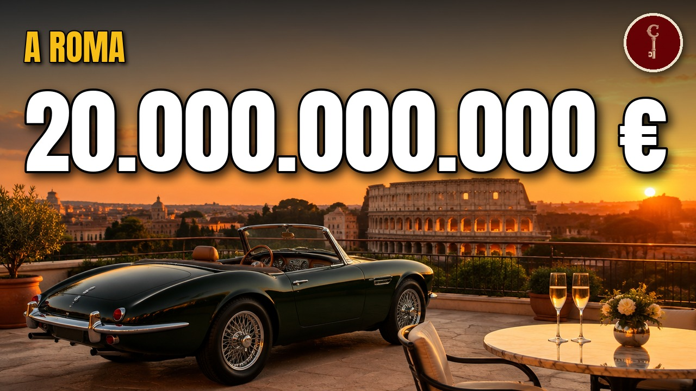

Lazio
Le 14 famiglie Romane più RICCHE (non sono principi né cardinali... le conosci?)

Guarda il video su YouTubeFonti della ricerca
- en.ilsole24ore.com, lavinia biagiotti for our 60th anniversary ecosystem made of fashion sport and art AHUWwitB
- panorama.it, laura biagiotti 60 anni di moda cultura e innovazione made in italy
- Wikipedia (en), Laura Biagiotti
- alliance-arena.com, bricofer
- italiaoggi.it, a bricofer e conforama italia la maggioranza di lapeyre d6fb1dfc
- forvismazars.com, il percorso di rilancio del gruppo conforama
- atoka.io
- cedigros.com, GROS 25 Anniversario
- atoka.io
- italiancompaniesforlargescaledistribution.digital.ice.it, caffe trobetta spa
- ghcspa.com
- fortuneita.com
- teleborsa.it, garofalo health care utile 2025 sale a 23 6 milioni dividendo di 0 093 euro 91
- consob.it, garofalo health care spa azionariato 2
- ilpost.it, vacanze di natale quaranta anni
- filmauro.it, About us 437
- quifinanza.it, aurelio de laurentiis
- calcioefinanza.it
- Wikipedia (en), Ghella (company)
- ghella.com, BdS 2025 Ghella 0
- ghella.com, Bilancio di Sostenibilità 2024
- polito.it, CS Laurea Honoris Causa Enrico Ghella
- fatturatoaziende.com, ghella 00898971007
- mark-up.it, pewex una storia italiana
- pewex-supermercati.it, chi siamo
- Wikipedia (en), Pewex
- foodweb.it, pewex affida la direzione generale a massimo lucentini
- sgieurope.com, 42481.article
- milanofinanza.it, cisalfa si attrezza per l ipo 2637192
- sgieurope.com, 39875.article
- ladige.it, e morto vincenzo mancini il patron di cisalfa sport av4opubb
- retail-news.de, italienische cisalfa sport uebernimmt sportscheck aus der insolvenz
- forbes.it, cisalfa supera il miliardo la strategia che sta cambiando lo sport retail europeo
- sgieurope.com, 67735.article
- Wikipedia (it), Mondo Convenienza
- money.it, quanto fattura mondo convenienza colosso dell arredamento low cost in italia
- forbes.it, la famiglia farmaceutica italiana da 10 miliardi di dollari si fa strada nel mercato statunitense
- angeliniindustries.com, our story
- Wikipedia (it), Francesco Angelini (1887-1964)
- Wikipedia (it), Gruppo Angelini
- angeliniindustries.com, press kit company profile ita july2026
- lapresse.it, angelini industries 46 ricavi 2025 bene pharma e tech
- confindustria.it, alberto tripi
- Wikipedia (it), AlmavivA
- forbes.it, marco tripi almaviva it sta italian technology
- consumidormoderno.com.br, planos de expansao almaviva
- businesswire.com, iteris completes transaction with almaviva
- en.ilsole24ore.com, almaviva accelerates on artificial intelligence and goes 2 billion revenue AI9skldC
- caltagironespa.it, storia
- caltagironeeditore.com, Company Profile Ced 2023
- forbes.it, francesco gaetano caltagirone ritratto signore del cemento mediobanca
- mtg.com, metro launched in rome today
- emarketstorage.it, 20260312 178753
- en.topmanagers.it, fabrizio di amato
- forbes.it, fabrizio di amato maire tecnimont
- Wikipedia (en), Maire Tecnimont
- milanofinanza.it, maire utili record e dividendo in crescita la borsa premia il piano al 2035 202603041525217494
- Wikipedia (en), Pietro Salini
- media.webuildgroup.com, 20260114 CS ITA Metro C Tratta T1 def ITA
- italpress.com
- ingenio-web.it, webuild e fincantieri consegnano le chiavi del nuovo ponte di genova
- media.webuildgroup.com, 20240721 NS Simonpietro Salini finale ITA
- Wikipedia (en), Webuild
- media.webuildgroup.com, 20260415 Webuild Salini Costruire secondo Bellezza
- italpress.com
- wealthrank.in, richest billionaires in switzerland 2026
- museo.unifarco.it, bioplastina serono il ricostituente preferito dagli italiani xx secolo di giulia bovone 176
- emdgroup.com, corporate history stories i3
- company-histories.com, Serono SA Company History
- Wikipedia (en), Ernesto Bertarelli
Attribuzioni di immagini e video
Profilo Metro C (Roma)
Raoli · CC BY-SA 4.0
.jpg){kind=link}
Raoli · CC BY-SA 4.0
Pigna - via del Corso palazzo Doria Pamphili 1000419
Lalupa · CC BY-SA 4.0

Lalupa · CC BY-SA 4.0
SALARIA4210819A
it:indeciso42 · CC BY-SA 4.0

it:indeciso42 · CC BY-SA 4.0
Laura Biagiotti Quirinale (cropped)
Unknown authorUnknown author · Attribution (licenza libera Commons, equivalente CC BY)
.jpg){kind=link}
Unknown authorUnknown author · Attribution (licenza libera Commons, equivalente CC BY)
Panorama di Firenze centro visto dal Piazzale Michelangelo
PROPOLI87 · CC BY-SA 4.0

PROPOLI87 · CC BY-SA 4.0
New-York-Times-Building
Dan DeLuca · CC BY 2.0

Dan DeLuca · CC BY 2.0
Roma by Laura Biagiotti
Bruce The Deus · CC BY-SA 4.0

Bruce The Deus · CC BY-SA 4.0
Marco Simone vecchio
LuigiT · CC BY-SA 4.0

LuigiT · CC BY-SA 4.0
Panorama Guidonia Montecelio
MattSid · CC BY-SA 3.0

MattSid · CC BY-SA 3.0
Marco Simone - Ryder Cup 2022 - Holes 10, 11 and 16
Harris Kalinka · CC BY 3.0
Harris Kalinka · CC BY 3.0
Ryder Cup 2023 - Grand Stand
Cutkiller2018 · CC BY-SA 4.0

Cutkiller2018 · CC BY-SA 4.0
First Tee Grandstand
LittleWhites · CC BY-SA 4.0

LittleWhites · CC BY-SA 4.0
L'ingresso principale del Marco Simone Golf Club
LittleWhites · CC BY-SA 4.0

LittleWhites · CC BY-SA 4.0
Paolo Monti - Servizio fotografico (Roma, 1979) - BEIC 6353632
Paolo Monti · CC BY-SA 4.0
_-_BEIC_6353632.jpg){kind=link}
Paolo Monti · CC BY-SA 4.0
Conforama Cusset (1) 2022-06-05
Tabl-trai · CC BY-SA 4.0
_2022-06-05.JPG){kind=link}
Tabl-trai · CC BY-SA 4.0
Conforama Cusset (2) 2022-06-05
Tabl-trai · CC BY-SA 4.0
_2022-06-05.JPG){kind=link}
Tabl-trai · CC BY-SA 4.0
Magasin Lapeyre au Chesnay le 8 avril 2017 - 1
Lionel Allorge · CC BY-SA 3.0

Lionel Allorge · CC BY-SA 3.0
Magasin Lapeyre au Chesnay le 8 avril 2017 - 2
Lionel Allorge · CC BY-SA 3.0

Lionel Allorge · CC BY-SA 3.0
Rome Aug 2023 17 51 28 692000
Robot8A · CC BY-SA 4.0

Robot8A · CC BY-SA 4.0
Termini Station Rome (9554051681)
Sean MacEntee from Monaghan, Ireland · CC BY 2.0
.jpg){kind=link}
Sean MacEntee from Monaghan, Ireland · CC BY 2.0
Pomezia panorama dai Castelli Romani
Deblu68 · CC BY 3.0

Deblu68 · CC BY 3.0
Parco Del Colle Oppio - panoramio
Mister No · CC BY 3.0

Mister No · CC BY 3.0
Monti - Colle Oppio 1060869
Lalupa · CC BY-SA 3.0

Lalupa · CC BY-SA 3.0
Il Colosseo dal parco di Colle Oppio
Shardan · CC BY-SA 3.0

Shardan · CC BY-SA 3.0
Dino de laurentiis crop
Justin Sewell · CC BY 2.0

Justin Sewell · CC BY 2.0
Aurelio De Laurentiis
Mireastar95 · CC BY-SA 4.0

Mireastar95 · CC BY-SA 4.0
Piazza Venezia a Roma
Zavijavah · CC BY-SA 3.0

Zavijavah · CC BY-SA 3.0
Carlo Vanzina
NRCN · CC BY 3.0

NRCN · CC BY 3.0
Cerimonia di presentazione dei candidati ai Premi David di Donatello per l’anno 2023 09 (cropped)
Quirinale · Attribution (licenza libera Commons, equivalente CC BY)
.jpg){kind=link}
Quirinale · Attribution (licenza libera Commons, equivalente CC BY)
Corso Italia, Cortina d'Ampezzo
Tiia Monto · CC BY-SA 3.0

Tiia Monto · CC BY-SA 3.0
Cortina d'Ampezzo - Comune di Cortina d'Ampezzo - 2023-09-27 15-35-37 005
Acquario51 · CC BY-SA 4.0

Acquario51 · CC BY-SA 4.0
Olimpia delle Tofane ski race course in September, Pomedes rock peaks Ra Pegna and Ra Bujela, Cortina d'Ampezzo - Lacedel, Gilardon, Tofana di Rozes and Punta Marietta - Faloria Cortina d'Ampezzo 7 (cropped)
kallerna, photocropper: User:LudwigSebastianMicheler · CC BY-SA 4.0
.jpg){kind=link}
kallerna, photocropper: User:LudwigSebastianMicheler · CC BY-SA 4.0
Athens Metro Evangelismos4
Tilemahos Efthimiadis · CC BY-SA 2.0

Tilemahos Efthimiadis · CC BY-SA 2.0
Sydney Metro - Barangaroo - TBM Kathleen Cutterhead - Flickr - john cowper
John Cowper from Sydney, Australia · CC BY 2.0

John Cowper from Sydney, Australia · CC BY 2.0
Istanbul-Tunel-Historic-Underground-Tunnel
HaberSiteleri · CC BY 4.0

HaberSiteleri · CC BY 4.0
Baikal Railway, Kirkirey railway tunnel, Russia
Vyacheslav Argenberg · CC BY 4.0

Vyacheslav Argenberg · CC BY 4.0
Brenner Base Tunnel Zufahrtstunnel Wolf
BBT SE · CC BY-SA 4.0

BBT SE · CC BY-SA 4.0
Brenner base tunnel map
Hbf878, OpenStreetMap contributors, Lencer · CC BY-SA 2.0

Hbf878, OpenStreetMap contributors, Lencer · CC BY-SA 2.0
Brenner Base Tunnel Aicha-Mauls
BBT SE · CC BY-SA 4.0

BBT SE · CC BY-SA 4.0
Bisceglie MM
Michele M. F. · CC BY-SA 2.0

Michele M. F. · CC BY-SA 2.0
The Bays Metro Station TBM
JustARandomEditor123 · CC BY-SA 4.0

JustARandomEditor123 · CC BY-SA 4.0
Pewex-reklama na budynku w Lodzi
Krzysztof Maria Różański, (Upior polnocy) · CC BY 2.5

Krzysztof Maria Różański, (Upior polnocy) · CC BY 2.5
Gdansk Chmielna Pewex
Andrzej Otrębski · CC BY-SA 3.0

Andrzej Otrębski · CC BY-SA 3.0
Wrzeszcz Pewex, 19.8.1990
MOs810 · CC BY-SA 4.0

MOs810 · CC BY-SA 4.0
Castelluccio 17
Silvio sorcini · CC BY-SA 4.0

Silvio sorcini · CC BY-SA 4.0
Norcia, piazza san benedetto, 01
Sailko · CC BY 3.0

Sailko · CC BY 3.0
Drinking fountain on Via di Grotta Perfetta, Roma, Italia Sep 14, 2024 05-25-36 PM
Dieterdreist · CC BY-SA 4.0

Dieterdreist · CC BY-SA 4.0
Muzeum Życia w PRL, Warszawa (7)
Qkiel · CC BY-SA 4.0
.jpg){kind=link}
Qkiel · CC BY-SA 4.0
Garten und Villa D´Este 10
Burkhard Mücke · CC BY-SA 4.0

Burkhard Mücke · CC BY-SA 4.0
SportScheck Munich
Tiia Monto · CC BY-SA 3.0

Tiia Monto · CC BY-SA 3.0
Forte Michelangelo, Civitavecchia, 2019 03 12 AIDA
Bewahrerderwerte · CC BY-SA 4.0

Bewahrerderwerte · CC BY-SA 4.0
Bagnaia, Italy
User:Giant60az · CC BY-SA 3.0

User:Giant60az · CC BY-SA 3.0
Sant Boi i Barcelona des de Sant Ramon P1490896
pere prlpz · CC BY-SA 3.0

pere prlpz · CC BY-SA 3.0
Roma, veduta dal gianicolo 02
Sailko · CC BY-SA 3.0

Sailko · CC BY-SA 3.0
Ancona, Veduta panoramica 02
Parsifall · CC BY 4.0

Parsifall · CC BY 4.0
Ricinus communis - panoramio (1)
Björn S. · CC BY-SA 3.0
.jpg){kind=link}
Björn S. · CC BY-SA 3.0
Ricinus communis 008
H. Zell · CC BY-SA 3.0

H. Zell · CC BY-SA 3.0
Vigna di Valle 20110812 — Ansaldo SVA 5
Blackcat · CC BY-SA 3.0

Blackcat · CC BY-SA 3.0
Ponte del mare Pescara 03
Gianni o O · CC BY-SA 4.0

Gianni o O · CC BY-SA 4.0
Lungo Tevere nei pressi di Castel Sant'Angelo - panoramio
Carlo Pelagalli · CC BY-SA 3.0

Carlo Pelagalli · CC BY-SA 3.0
Sede AlmavivA Roma
Carlo Dani · CC BY-SA 4.0

Carlo Dani · CC BY-SA 4.0
Rome Termini Frecciarossa 1000 stel 49 Milano C Le (35050229673)
Rob Dammers · CC BY 2.0
.jpg){kind=link}
Rob Dammers · CC BY 2.0
La Défense seen from the Seine
DiscoA340 · CC BY-SA 4.0

DiscoA340 · CC BY-SA 4.0
The Pantheon (XI) (7556337548)
Institute for the Study of the Ancient World from New York, United States of America · CC BY 2.0
_(7556337548).jpg){kind=link}
Institute for the Study of the Ancient World from New York, United States of America · CC BY 2.0
Skyline of São Paulo centre
Rodrigo.Argenton · CC BY-SA 4.0

Rodrigo.Argenton · CC BY-SA 4.0
Il Messaggero, Rome
LPLT · CC BY-SA 3.0

LPLT · CC BY-SA 3.0
Francesco Gaetano Caltagirone alla festa per il restyling de "Il Messaggero".
Caltagirone Group · CC BY 2.0

Caltagirone Group · CC BY 2.0
Quartiere XIII Aurelio, Roma, Italy - panoramio (2)
Giovanni Dore · CC BY 3.0
.jpg){kind=link}
Giovanni Dore · CC BY 3.0
Roma - Villa Doria Pamphilj - 2026-09-18
Samueleop · CC BY-SA 4.0

Samueleop · CC BY-SA 4.0
Caltagirone Editore - Processo di Stampa
Caltagirone Editore · CC BY 2.0

Caltagirone Editore · CC BY 2.0
Metro tevere roma0
Lucaf1 · Attribution (licenza libera Commons, equivalente CC BY)

Lucaf1 · Attribution (licenza libera Commons, equivalente CC BY)
Aalborg Portland cement factory seen from the city
Marius Vassnes · CC BY-SA 4.0

Marius Vassnes · CC BY-SA 4.0
Cementir sede
Carlo Dani · CC BY-SA 4.0

Carlo Dani · CC BY-SA 4.0
Caltagirone Editore - La redazione di Caltagirone Editore
Caltagirone Editore · CC BY 2.0

Caltagirone Editore · CC BY 2.0
Aalborg Portland
© 2011 by Tomasz Sienicki [user: tsca, mail: tomasz.sienicki at gmail.com] · CC BY 3.0

© 2011 by Tomasz Sienicki [user: tsca, mail: tomasz.sienicki at gmail.com] · CC BY 3.0
Mole Antonelliana Torino
Livioandronico2013 · CC BY-SA 3.0

Livioandronico2013 · CC BY-SA 3.0
Stazione di Torino Porta Nuova 2022 01
MOs810 · CC BY-SA 4.0

MOs810 · CC BY-SA 4.0
2026-06-13-Lingotto
Gunnar Klack · CC BY-SA 4.0

Gunnar Klack · CC BY-SA 4.0
2026-06-12-Lingotto-Pista-500
Gunnar Klack · CC BY-SA 4.0

Gunnar Klack · CC BY-SA 4.0
Milano - edificio Tecnimont - 01
Fred Romero from Paris, France · CC BY 2.0

Fred Romero from Paris, France · CC BY 2.0
Panorama of Roma
No machine-readable author provided. KostasKon assumed (based on copyright claims). · CC BY 2.5

No machine-readable author provided. KostasKon assumed (based on copyright claims). · CC BY 2.5
20260701 Stazione Metro C Colosseo
Emmeca · CC BY-SA 4.0

Emmeca · CC BY-SA 4.0
M4 San Babila appena inaugurata
Saggittarius A · CC BY-SA 4.0

Saggittarius A · CC BY-SA 4.0
Ponte San Giorgio e GE
Al*from*Lig · CC BY-SA 4.0

Al*from*Lig · CC BY-SA 4.0
Ponte per Genova 3 (Genova)
Christian Michelides · CC BY-SA 4.0
.jpg){kind=link}
Christian Michelides · CC BY-SA 4.0
Koka Dam, Ethiopia
Bair175 · CC BY-SA 4.0

Bair175 · CC BY-SA 4.0
ASC Leiden - Rietveld Collection - Nigeria 1970 - 1973 - 01 - 083 Kainji Dam. The water flows from four openings
Aart Rietveld · CC BY-SA 4.0

Aart Rietveld · CC BY-SA 4.0
Salini Impregilo roma
Carlo Dani · CC BY-SA 4.0

Carlo Dani · CC BY-SA 4.0
Sesto palazzo uffici dell'ENI in costruzione con Salini-Impregilo. Lato nord (30 ottobre 2022)
Marcuscalabresus · CC BY-SA 4.0
.jpg){kind=link}
Marcuscalabresus · CC BY-SA 4.0
Container ship entering the new Cocoli locks of the Panama Canal
David Brossard · CC BY-SA 2.0

David Brossard · CC BY-SA 2.0
NeoPanamax Ship Panorama Agua Clara Locks 09 2019 0940
Mariordo (Mario Roberto Durán Ortiz) · CC BY-SA 4.0

Mariordo (Mario Roberto Durán Ortiz) · CC BY-SA 4.0
Rome from gianicolo hill by night 20090430
Ott0ne · CC BY 3.0

Ott0ne · CC BY 3.0
Trastevere - s Cosimato - chiostro 1160388
Lalupa · CC BY-SA 3.0

Lalupa · CC BY-SA 3.0
01337LOW HQ MERCK SERONO
Cathrin Badzung · CC BY-SA 3.0

Cathrin Badzung · CC BY-SA 3.0
Эрнесто Бертарелли
Vollav · CC BY-SA 4.0

Vollav · CC BY-SA 4.0
Alinghi-img 0179
Rama · CC BY-SA 2.0 fr

Rama · CC BY-SA 2.0 fr
Alinghi V Ouchy
Fanny Schertzer · CC BY-SA 2.5

Fanny Schertzer · CC BY-SA 2.5
Roma Termini (24270678943)
Ingolf from Berlin , Deutschland · CC BY-SA 2.0
.jpg){kind=link}
Ingolf from Berlin , Deutschland · CC BY-SA 2.0
0902NorciaFlliAnsuini
Geobia · CC BY-SA 3.0

Geobia · CC BY-SA 3.0
MC100 a Pigneto (metropolitana di Roma)
BouncyCactus · CC BY-SA 4.0
.jpg){kind=link}
BouncyCactus · CC BY-SA 4.0
Pigna - via del Corso palazzo Doria Pamphili 1000418
Lalupa · CC BY-SA 4.0

Lalupa · CC BY-SA 4.0
Scene ricostruite
Alcune scene sono ricostruite con l'intelligenza artificiale (30 immagini e 17 clip). Non sono documenti né fotografie d'epoca.
Mappe
- Confini amministrativi italiani (openpolis/geojson-italy, dati ISTAT) · CC BY 4.0 · fonte